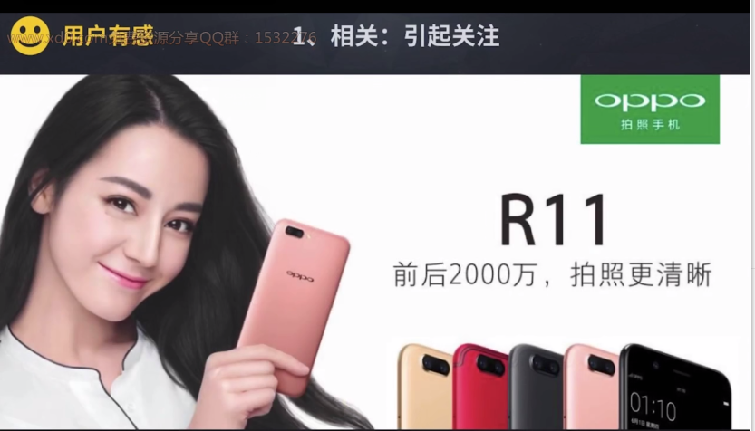
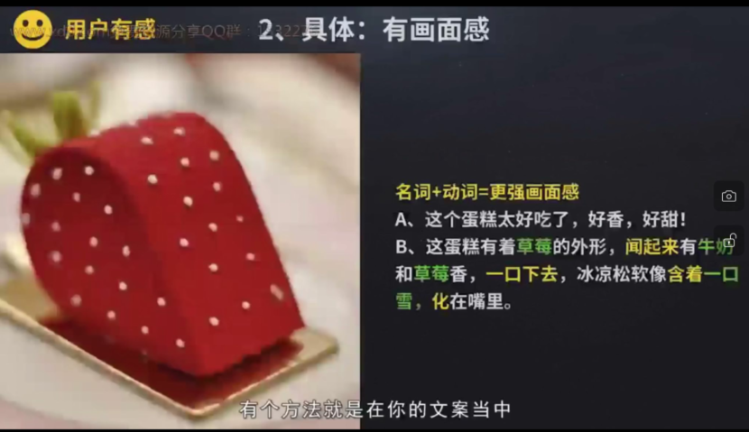
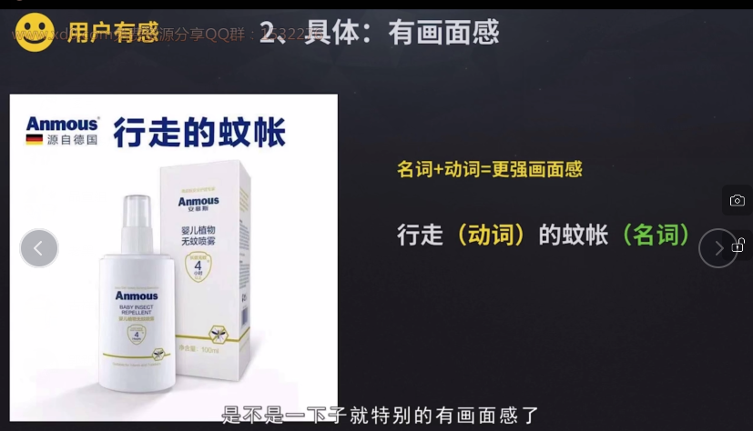

这个文案是否清晰地传递出基本的信息
我们的文案到底都在销售什么呢？
我们文案做一个分类
不同的文案要达到目标就不一样,要达到的目标就不一样评价的标准也不一样
我们把所有的文案分类分为两类
销售文案是销量商品
品牌文案就是侧重于销售品牌
如果是用在朋友圈,那些希望能够马上带货的朋友圈的内容就是销售文案
而你日常发的一些动态就是希望让人知道你是做什么的,让别人喜欢上你信任上你,这就是品牌文案
1.明确的商品卖点
2.立刻购买的理由
3.明确的购买引导

十分钟房间空气焕然一新,这样的一行小字就是明确了商品卖点
它告诉你这个商品的特点是什么
699限时优惠的价格就是一个立即购买的理由
立即购买的按钮就是对用户的一个购买引导
这样一个按钮就会引起人下意识的点击动作
就是销售文案的三点

小天才电话手表的商品详情页的文案，电话手表这么多为什么选择小天才,因为我们对品质更苛求
然后下方就展示了防水品质检测的内容
这个就是明确的商品卖点
而下方的多重好礼送不停

购机送各种礼品,并且还是限时的,那就是一个立即购买的理由了
而下方的立即抢购按钮就是一个明确的购买引导
错误的案例

这个海报没有满足销售文案的特点,点进去才发现这个店铺是卖婴儿服装的,整个店铺的特点就是卖天然有机棉的这种材质
还有促销活动
我们根据我们销售的三个特点来优化一下

品牌文案的特点
两个工作场景,检测你是否掌握知道点。
我们有一个新产品要上架到电商网站,你去写个商品介绍吧。
这个任务是品牌文案还是销售文案呢？
只要我们去思考写这个文案我们要达到的目的是什么？是让别人去购买还是让别人知道货品,进而喜欢我们的品牌
显然商品介绍侧重在让用户了解商品,而且在电商网站上投放,当然是希望用户能够立即加入购物车了,所以这个文案属于销售文案
当我们知道是销售文案后就应该知道怎么去写才会具有销售文案的三个特点,用好了这三个效果自然就有了效果
接下来我们再看看第二个场景
老板说我们在高铁站上有一个广告牌可以用,你看下放什么广告文案比较好
你会放销售文案还是品牌文案,自然大部分人都希望仍然是销售文案
让别人看完之后马上下单
但是等等,在高铁站这么匆忙的地方，人们真的会停下来好好的看你的广告吗
然后根据指示购买吗？大概率是不会购买的,因为人群是非常的匆忙,因为时间不够
所以大部分的商家都会选择在这样的环境下做品牌广告
比如某某某某品牌高端隔音门窗,只求别人能够在匆匆的一瞥中,知道品牌名
知道这个品牌是做什么的！
所以你是不是跟我一样选择做一个品牌文案
什么是用户有感呢？先来看两个广告案例
假设你现在正在逛街,你也有买房的意向,此时此刻你收到了两个房地产的宣传单,以上这两个宣传单哪个更容易让你想去看看样板房呢？
左边这个文案是阅世界藏人生闪耀全城
右边这个文案是零首付,马上住限时预约中
很多人都在意价格,右边的更能吸引自己,而左边的虽然文案看起来很美很有意境,但是想看的动力还不是很足
这个其实就是要看你的用户是哪个人群,你的用户关注的是什么东西,比如右边的文案考虑的是用户比较关注的是价格所以把零首付卖点拿出来还说,所以我们的文案的写作还需要考虑我们是写给谁看他们关注什么！如果我们的文案不是用户关注的那就不要期待用户会仔细去看我们的文案了
著名的广告人奥格威说过一句话：“消费者不是傻瓜,消费者好比是你的妻子,如果你以为仅凭口号和煽情的形容词就能劝服她买东西那你是在侮辱她的智商”
用户看完文案后,有感触,有共鸣,有代入感,能被打动。
相关就是你写的东西是跟用户信息是息息相关的
具体就是让你写的东西有足够的细节
情绪就是让你写的内容足够引起相关的情绪

前后2000万拍照更清晰,前后2000万就是跟商家相关的信息,是商家需要说的卖点,但是你会发现如果你只说这一句用户是没有感觉的,他会说你的前后2000万关我什么事呢？
用户他其实并不关注你的商品你的卖点,用户只关注你的商品或卖点能给他带来什么好处,所以下一句拍照更清晰这个就是跟用户相关的内容,用户也能够更明白前后2000万的卖点意味着什么也就是拍照更清晰了
你写的文案就是要跟用户相关这就意味着你不能只说自己的卖点,而是要关注这个卖点能给用户带来什么好处,比如你的纯净水器很方便说四芯五级精滤便利好生活,那还不如说打开水龙头就能喝到纯净水。后面这句文案跟用户的生活更为贴近更为相关
要多多思考你的这个卖点能够给用户带来什么,比如我们说衣服的材质百分百羊毛的不能仅仅说百分百羊毛要说让用户穿着更保暖,如果是真丝材质不仅仅只说真丝而是说这个能给用户带来的更透气的感觉
更能彰显对方的气质,写文案卖点要有但也一定要写出卖点给用户带来的好处这个也就是买点！这个就是相关
接下来我们再看看具体让你的内容更有画面感,具体重点在于用词,用名词更容易让你的文案像图画一样进入到用户的大脑更容易被记住被感受到
比如以下几个内容,看完后能够让你的脑海中有画面感的有哪些？
(1)蒙娜丽莎的微笑
(2)一个大西瓜
(3)广东的省会城市
选项一选项二大家脑海中的画面会是一样的,但是选项三就完成得看人了。蒙娜丽莎和大西瓜都是具体的,具体才会有清晰的画面,那么在我们的文案当中.如何具体运用呢

名词+动词 = 更强画面感
A、这个蛋糕太好吃了,好香，好甜！
B、这蛋糕有着草莓的外形,闻起来有牛奶和草莓香, 一口下去冰凉松软像含着一口雪化在嘴里
所以在你的文案当中尽可能多的运用名词和动词
比如请问一个蛋糕好吃,如果你说这个蛋糕太好吃了好香好甜,或者说香甜可口,用户都是没有感觉的,但是如果你说,这个蛋糕有草莓的外形,闻起来有牛奶和草莓的香味一口下去,冰凉松软的就像含着一口雪化在嘴里,这里的草莓牛奶一口雪都是名词儿,而闻起来 一口下去 含着 化这些都是动词,从感官的角度直接让用户感受到这个蛋糕好吃,具体怎么一个好吃法
接下来再看看这个内容

行走(动词)的蚊帐(名词)
非常有画面感,好像碰到喷雾,你自己带着一个蚊帐就在走动是不是也感觉喷雾它的有效呢
这个就是具体带来的画面感的效果,更容易进入用户的大脑
接下来我们再来看看情绪
通过文案让用户感受到
奇葩说的制作者就说过一句话:"内容的本质是情感共鸣和情绪共振"
我们的文案就是内容,如何通过我们的文案去跟用户有共鸣,有共振呢
那人的情绪会有很多种,喜怒哀惧
文案中用的最多的就是喜悦和恐惧
你可以回想一下,你看过的大部分广告是不是主要就是这两种情绪呢
一种是类似于胃痛胃酸胃胀呈现出没有广告商品带来的痛苦,而另一种就是因为有了广告商品而带来美好的感受
你可能比较熟悉以下的这几个广告案例
台湾山叶钢琴“学钢琴的孩子不会变坏”调动的就是家长的恐惧,不学钢琴怕孩子变坏,王老吉的怕上火喝王老吉,调动的就是吃火锅烧烤的时候你怕上火的那种恐惧,又比如神州专车主打的安全,打出的一系列就是我怕黑专车的广告
内容是这样的,家里的十个好叔叔也斗不过车里的一个怪叔叔,不心存侥幸就不会身处险境,我怕黑专车,那我怕黑专车调动的就是外出轿车怕遇到坏人的恐惧
除了恐惧的情绪就是喜悦的情绪
比如可口可乐的经典广告 Taste the Feeling为了传递快乐的情绪
在全国各地抓拍了150人畅饮可口可乐的画面让人来感受这个情绪,从而让人把喝可口可乐很欢乐的情绪给记住
以上就是我们用户有感的三个小方法